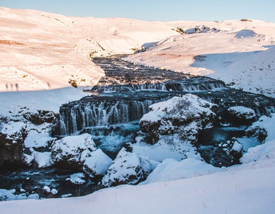

Iceland, a Nordic island nation, is defined by its dramatic landscape with volcanoes, geysers, hot springs and lava fields. Massive glaciers are protected in Vatnajökull and Snæfellsjökull national parks. Most of the population lives in the capital, Reykjavik, which runs on geothermal power and is home to the National and Saga museums, tracing Iceland’s Viking history.
Capital: Reykjavik
Reykjavik, on the coast of Iceland, is the country's capital and largest city.
It's home to the National and Saga museums, tracing Iceland’s Viking history.
The striking concrete Hallgrimskirkja church and rotating Perlan glass dome offer sweeping views of the sea and nearby hills.
Exemplifying the island’s volcanic activity is the geothermal Blue Lagoon spa, near the village of Grindavik.
Reykjavik is well known for the late-night clubs and bars in its compact center.
The regenerated area around the Old Harbour has a concert hall, souvenir shops and views of Mt. Esja.
Shopping options include Downtown Laugavegur’s boutiques
and the Kolaportid weekend flea market. A popular day trip, the “Golden Circle” tour takes in Gullfoss Waterfall, spouting geysers
and Thingvellir National Park. In the darker months, between autumn and spring, rural areas are popular places to spot the Northern Lights atmospheric phenomenon.
Lets know some information about Iceland
Iceland is a stunningly beautiful place if you enjoy strange and desolate landscapes. Because it is so close to the Arctic Circle, the amount of daylight varies dramatically by season. The sun sets briefly each night in June, but it doesn't get fully dark before it comes back up again. In the March and September equinoxes, days and nights are of about equal length, as elsewhere in the world. If you go in December, it's almost 20 hours of darkness. Summer is definitely the best time to go, and even then the tourist traffic is still mild. The midnight sun is a beautiful sight and one definitely not to be missed. It is easy to lose track of time when the sun is still up at 23:00. Early or late winter, however, can be surprisingly good times to visit. In late January, daylight is from about 10:00-17:00, prices are lower than in the high season, and the snow-blanketed landscape is eerily beautiful.
Ice Skating
Ice skating is the act of motion by wearer of the ice skates to propel the participant across a sheet of ice. This can be done for a variety of reasons, including exercise, leisure, traveling,and various sports. Ice skating occurs both onspecially prepared ice surfaces (arenas, tracks, parks), both indoors and outdoors, as well as on naturally occurring bodies of frozen water, such as ponds, lakes and rivers.